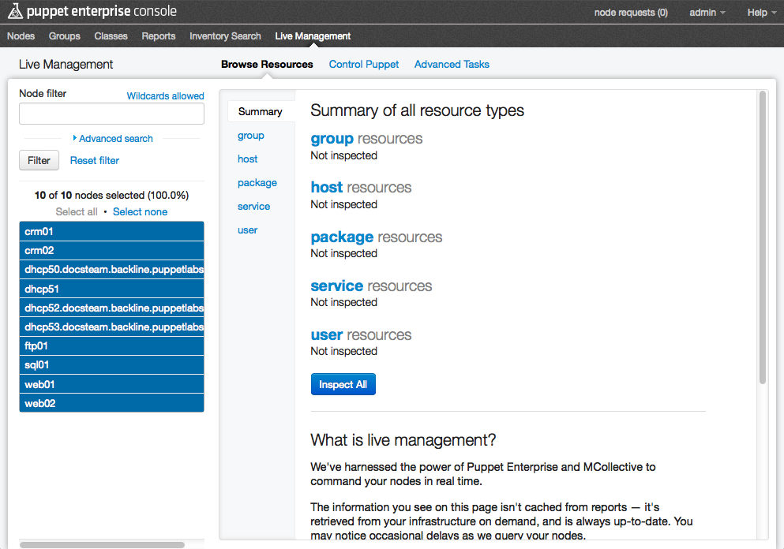
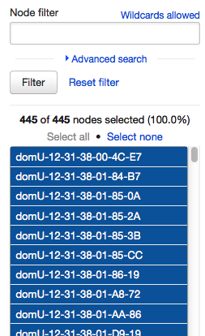
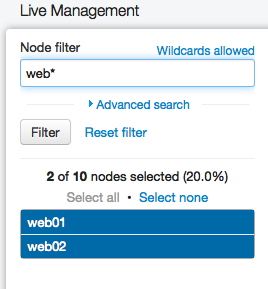
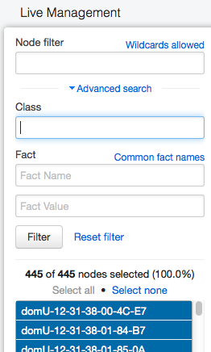
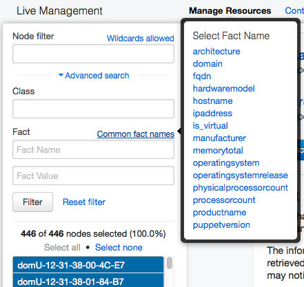
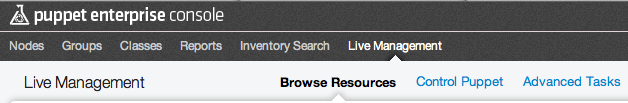
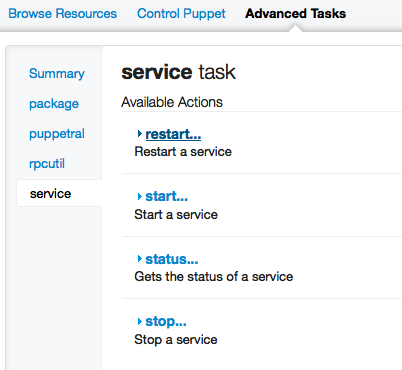
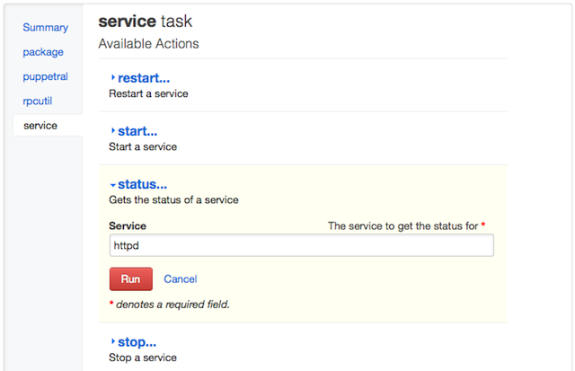
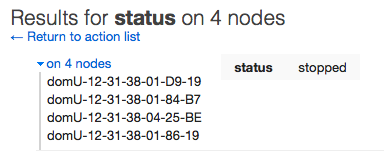

Navigating Live Management
What is Live Management?
The Puppet Enterprise (PE) console’s live management page is an interface to PE’s orchestration engine. It can be used to browse resources on your nodes and invoke orchestration actions.
Related pages:
- See the Orchestration: Overview page for background information about the orchestration engine.
- See the Orchestration: Invoking Actions page to invoke the same orchestration actions on the command line.
Notes: To invoke orchestration actions, you must be logged in as a read-write or admin level user. Read-only users can browse resources, but cannot invoke actions.
Since the live management page queries information directly from your nodes rather than using the console’s cached reports, it responds more slowly than other parts of the console.

The Node List
Every task in live management inspects or modifies a selection of nodes. Use the filterable node list in the live management sidebar to select the nodes for your next action. (This list will only contain nodes that have completed at least one Puppet run, which may take up to 30 minutes after you’ve signed their certificates.)

Nodes are listed by the same Puppet certificate names used in the rest of the console interface.
As long as you stay within the live management page, your selection and filtering in the node list will persist across all three tabs. The node list gets reset once you navigate to a different area of the console.
Selecting Nodes
Clicking a node selects it or deselects it. Use the “select all” and “select none” controls to select and deselect all nodes that match the current filter.
Only visible nodes — i.e. nodes that match the current filter — can be selected. (Note that an empty filter shows all nodes.) You don’t have to worry about accidentally commanding “invisibly” selected nodes.
Filtering by Name
Use the “node filter” field to filter your nodes by name.

You can use the following wildcards in the node filter field:
- ? matches one character
- * matches many (or zero) characters
Use the “filter” button or the enter key to confirm your search, then wait for the node list to be updated.
Hint: Use the “Wildcards allowed” link for a quick pop-over reminder.
Advanced Search
You can also filter by Puppet class or by the value of any fact on your nodes. Click the “advanced search” link to reveal these fields.

Hint: Use the “common fact names” link for a pop-over list of the most useful facts. Click a fact name to copy it to the filter field.

You can browse the inventory data in the console’s node views to find fact values to search with; this can help when looking for nodes similar to a specific node. You can also check the list of core facts for valid fact names.
Filtering by Puppet class can be the most powerful filtering tool on this page, but it requires you to have already assigned classes to your nodes. See the chapter on grouping and classifying nodes for more details.
Tabs
The live management page is split into three tabs.

- The Browse Resources tab lets you browse, search, inspect, and compare resources on any subset of your nodes.
- The Control Puppet tab lets you invoke Puppet-related actions on your nodes. These include telling any node to immediately fetch and apply its configuration, temporarily disabling puppet agent on some nodes, and more.
- The Advanced Tasks tab lets you invoke orchestration actions on your nodes. It can invoke both the built-in actions and any custom actions you’ve installed.
The Browse Resources Tab
The interface of the Browse Resources tab is covered in the Orchestration: Browsing Resources chapter of this manual.
The Control Puppet Tab
The Control Puppet tab consists of a single action list (see below) with several Puppet-related actions. Detailed instructions for these actions are available in the Orchestration: Control Puppet page of this manual.

The Advanced Tasks Tab
The Advanced Tasks tab contains a column of task navigation links in the left pane, which are used to switch the right pane between several action lists (and a summary list, which briefly describes each action list).

Action Lists
Action lists contain groups of related actions — for example, the “service” list has actions for starting, stopping, restarting, and checking the status of services:

These groups of actions come from the MCollective agent plugins you have installed, and each action list corresponds to one plugin. Both default and custom plugins are included on the Advanced Tasks page.
For more information on these plugins, see:
- The “actions and plugins” section of the orchestration overview page
- The list of built-in orchestration actions
- The “Orchestration: Adding Actions” page
Note that you can also trigger all of these actions from the command line:
Invoking Actions
You can invoke actions from the Control Puppet and Advanced Tasks tabs.
To invoke an action, you must be viewing an action list.
- Click the name of the action you want. It will reveal a red “Run” button and any available argument fields (see below). Some actions do not have arguments.
- Enter any arguments you wish to use.
- Press the “Run” button; Puppet Enterprise will show that the action is running, then display any results from the action.
If several nodes have similar results, they’ll be collapsed to save space; you can click any result group to see which nodes had that result.
Invoking an action with an argument:

An action in progress:

Results:

Argument Fields
Some arguments are mandatory, and some are optional. Mandatory arguments will be denoted with a red asterisk (*).
Although all arguments are presented as text fields, some arguments have specific format requirements:
- The format of each argument should be clear from its description; otherwise, check the documentation for the action. Documentation for PE’s built-in actions is available at the list of built-in actions.
- Arguments that are boolean in nature (on/off-type arguments) must have a value of
trueorfalse— no other values are allowed.